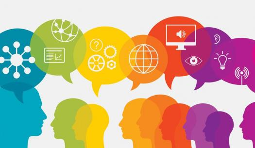
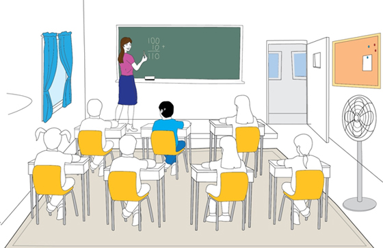

Module 1: Understanding Yourself as a Learner
1.1 Learning Styles and Preferences
In this section of you are going to explore...
- Learning Styles
- Learning Environments

It is essential to know about yourself as a learner, your capacity to learn, your successful learning strategies, dominant learning styles, your strong sides and disadvantages. Furthermore, the level of motivation and interest with respect to learning activities are also important aspects of learning.
Most people learn in different ways and have a style or a preference to help them acquire new skills and knowledge and to remember things. Some people prefer the term preference to styles so as not to categorize a learner. What suits one learner might not suit another. For example, if a group of people were learning yoga, some might like to watch and listen to the teacher first. Others might want to practise the movements at the same time as the teacher.
Think back to when you got a new mobile device, did you go for it and start using it, did you read the instructions first, or did you ask someone to show you what to do (or even look at a video on YouTube)? That’s an indicator of your individual learning style or preference for learning.
However, not everyone believes in styles or preferences - due to a lack of credible research. Just because a notion is popular, however, doesn’t make it true. A recent review of the scientific literature on learning styles found scant evidence to clearly support the idea that outcomes are best when instructional techniques align with individuals’ learning styles. In fact, there are several studies that contradict this belief. It is clear that people have a strong sense of their own learning preferences (e.g., visual, kinesthetic, intuitive), but it is less clear that these preferences matter.
Learning Styles
As you likely noticed after doing the surveys, learners use all three modalities to receive and learn new information and experiences. However, one or two of these receiving styles is normally dominant. This dominant style defines the best way for a person to learn new information by filtering what is to be learned. This style may not always to be the same for some tasks. The learner may prefer one style of learning for one task, and a combination of others for a different task.
- Visual Learners: absorb and recall information best by seeing
- Auditory Learners: absorb information best through the sense of hearing
- Tactile-Kinesthetic Learners: absorb information best by doing, experiencing, touching, moving or being active in some way.
Whatever your strongest Learning Style(s) results are, the best way to learn something is to try to use all three Learning Style approaches whenever you can. Because different activities use different parts of our brain, when we use different ways to do or learn the same thing, our minds do a better job of remembering it.
Learning Strategies Suggestions based on Learning Styles
| Visual Learners | Auditory Learners | Tactile-Kinesthetic Learners |
|---|---|---|
| Write things down | Use audiotapes for learning languages | Create a model |
| Jot down key points on post-it notes and display around the house | Read textbooks aloud | Demonstrate a principle |
| Copy what’s on the board | Repeat facts with eyes closed | Practice a technique |
| Sit near the front of the classroom to see the instructor clearly | Ask questions | Participate in simulations |
| Write keywords | Describe aloud what is to be remembered | Engage in hands-on activities |
| Create visual reminders of auditory info | Use word association to remember facts and lines | Study in a comfortable position, not necessarily sitting in a chair |
| Use mind maps to summarize large tracts of information | Watch videos | |
| Take notes | Participate in group discussions | |
| Make lists | Listen to taped notes | |
| Watch videos | Record lectures and listen to them again | |
| Use flashcards | Use audiobooks | |
| Use highlighters, underlining, etc. | Avoid auditory distractions |
Learning Environments
What are Learning Environments?

We can consider the Learning Environment to be a combination of the physical or virtual space and the social, cognitive and emotional circumstances in which learning takes place.
There are a wide variety of learning environments available to learners today. Learning environments could include any of the following and so much more:
- Large class lectures
- Study groups
- Tutors
- Online discussion forums
- Multimedia
- Learning commons
- Mobile apps
- And so many more
You may currently be using this course at school, in the library, at home or on the bus! You may be accessing this course online or have print booklets. This type of course may be called a distance education course, online course, blended course, outreach course or some other term. What they all have in common is that you are likely not physically in a classroom with your teacher 100% of the time.
Distance and blended education options are popular because they give students a wider range of learning experiences than they might have in the traditional classroom. Online learning can include material presented totally on the internet or combined with face-to-face instruction. Online and blended learning is the most recent form of distance learning, an educational format that has been used since the mid 20th century.
Advantages of Online/Blended Learning
- Greater flexibility - students can work at any time of day and anywhere.
- They can also take advantage of classes not offered by their local schools, including courses for college and Advanced Placement credit.
- Courses can offer a student the chance to finish an education that was interrupted.
Disadvantages of Online/Blended Learning
- Some students find that they miss the interaction with teachers and classmates
- Students can find it hard to organize their time efficiently
- Hard to be self-motivated